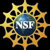

World-wide, several detectors
currently running or nearing completion are sensitive to a core collapse
supernova neutrino signal in the Galaxy. The neutrino signal emerges promptly
from a supernova's core, whereas it may take hours for the first photons
to be visible. Therefore, the detection of the neutrino burst from the
next Galactic supernova can provide an early warning for astronomers. Putting
several detectors in coincidence can provide the astronomical community
with a very high confidence early warning of the supernova's occurrence.
In addition, the SNEWS alarm may be able to serve as a trigger for detectors
which are not able to trigger on a supernova signal by themselves, allowing
extra data to be saved.
The SNEWS project involves an international collaboration of experimenters representing current supernova neutrino detectors. In addition, gravitational wave detectors will be involved. The goal of SNEWS is to provide the astronomical community with a prompt alert of the occurrence of a Galactic core collapse event. We are also engaged in cooperative inter-experiment work, such as downtime coordination and inter-experiment timing verification, designed to optimize global sensitivity to a core collapse supernova signal.
For more information, see Francis Reddy's article in Astronomy Magazine Online and the technical report in the New Journal of Physics.
 SNEWS is based on work supported by the National Science Foundation under grants PHY-0303196 and PHY-0302166.
Any opinions, findings, and conclusions or recommendations expressed in this material are those of the author(s) and do not necessarily reflect the views of the National Science Foundation.
Logo Above: The Greek nu superimposed upon a photo of Supernova 1987A (photo courtesy of HubbleSite).